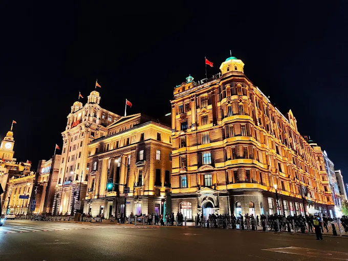

Pontos Turísticos
The Bund (O Calçadão Histórico)
O Bund é, sem dúvida, o marco mais famoso de Xangai. Localizado na margem oeste do rio Huangpu, sua arquitetura clássica europeia contrasta diretamente com os prédios modernos do outro lado do rio. É o símbolo do período colonial da cidade, oferecendo uma das caminhadas mais icônicas da China, especialmente à noite, quando as luzes se acendem e refletem nas águas do rio de forma espetacular.
O calçadão do Bund é uma das atrações que nenhum turista deixa de visitar. O imponente conjunto de edifícios é impossível de não notar, representando o centro bancário histórico da cidade. Graças ao seu design preservado, é um dos museus de arquitetura ao ar livre mais famosos da Ásia.

Famoso por sua arquitetura europeia preservada e vista para o skyline moderno.
Visite o site TravelChinaGuide para conhecer a história de cada edifício.
Oriental Pearl Tower (Torre Pérola do Oriente)
A estação inferior está localizada no distrito de Pudong, o coração tecnológico de Xangai. A torre possui diversas esferas que variam em altura, sendo a mais alta um deck de observação a cerca de 350 metros acima do solo. A subida em elevadores de alta velocidade é um destino popular, oferecendo aos visitantes uma vista panorâmica de 360 graus da cidade, dos rios e do Bund a partir de um mirante com chão de vidro transparente.
Para quem busca a melhor vista da metrópole, a Oriental Pearl Tower é parada obrigatória. Ela transporta os visitantes para o alto de uma estrutura futurista inspirada em um poema antigo sobre pérolas caindo em um prato de jade. Em poucos segundos de subida, revela-se um panorama deslumbrante do skyline de Pudong e das luzes da cidade. É o local perfeito para observar o pôr do sol urbano ou o show de luzes noturno.

A icônica torre ao centro, conectando o passado ao futuro tecnológico de Xangai.
Conheça o texto informativo sobre A Torre da Pérola para comparar com os maiores prédios vizinhos.
Jardim Yu (Yu Garden)
Xangai está situada no coração da tradição chinesa, e o Yu Garden é um dos melhores exemplos dessa herança. Esse refúgio clássico, construído durante a Dinastia Ming, é um jardim clássico chinês com 400 anos de idade, situado no distrito de Huangpu, em Xangai, construído durante a dinastia Ming pelo oficial Pan Yunduan como retiro de reforma para os seus pais. Reconhecido pela sua disposição requintada e beleza tranquila, exibe a arte tradicional chinesa de jardinagem com pavilhões, jardins ornamentais e lagos. Outrora um santuário familiar privado, é agora um famoso marco histórico que combina elegância arquitetónica com harmonia natural. Sendo uma das principais atracções de Xangai, oferece uma fuga serena da cidade moderna.
Você sabia que o Yu Garden é considerado um dos jardins mais bonitos do sul da China? Isso se deve ao seu layout detalhado, que inclui a famosa "Parede do Dragão". Frequentemente, testemunhamos festivais de lanternas e celebrações culturais tradicionais aqui. Lembre-se que o jardim é muito popular, portanto, um bom planejamento e chegar cedo aumentam suas chances de aproveitar a tranquilidade e tirar fotos magníficas das pontes e pavilhões.

A parte mais serena de Xangai, a arquitetura clássica chinesa refletida em lagos de carpas.
Veja mais sobre a visita e características do Jardim Yu